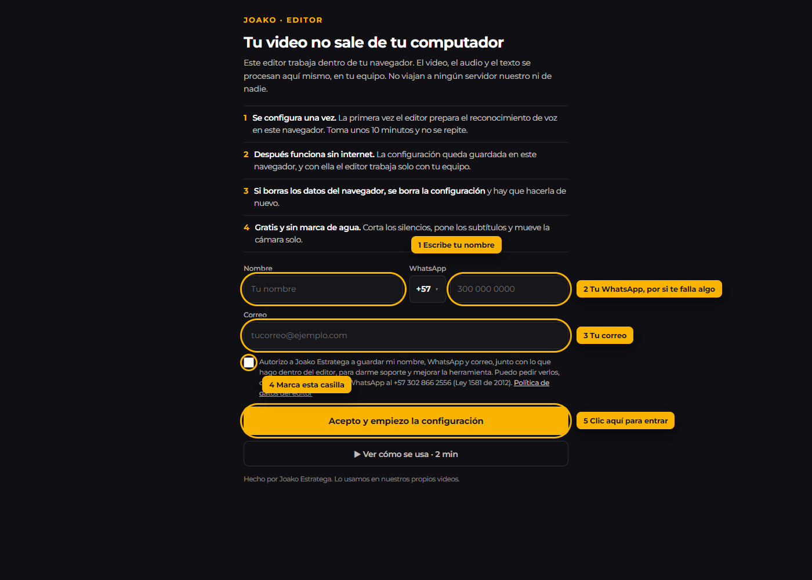
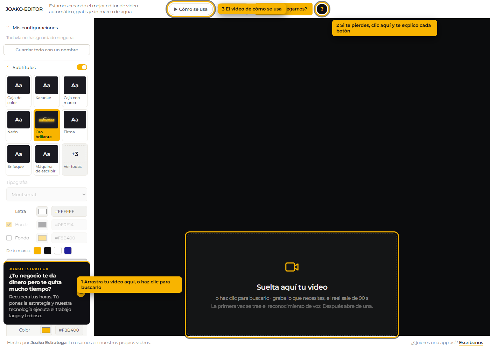
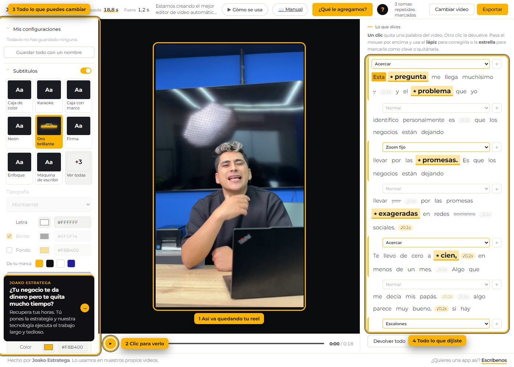
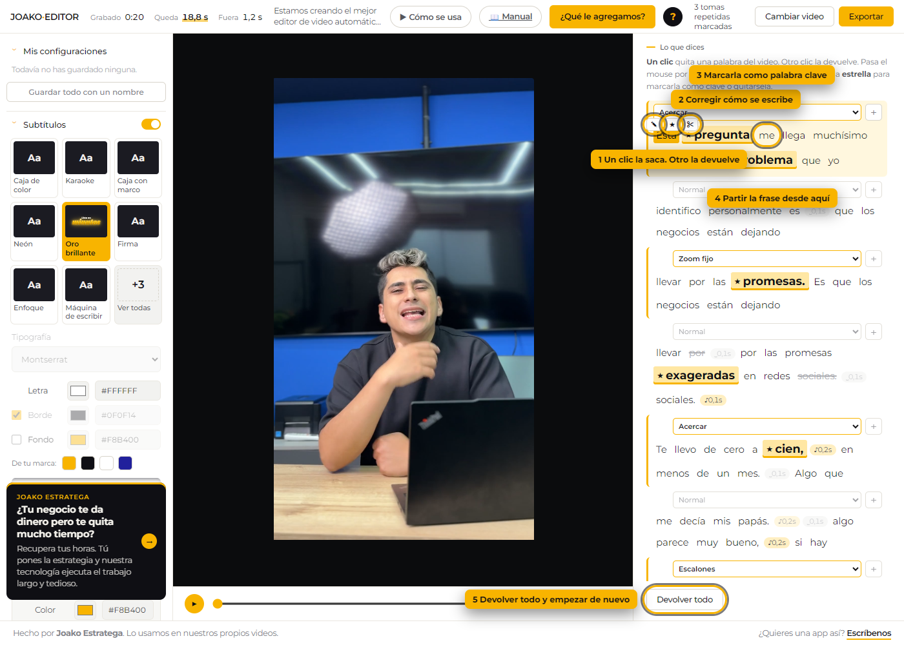
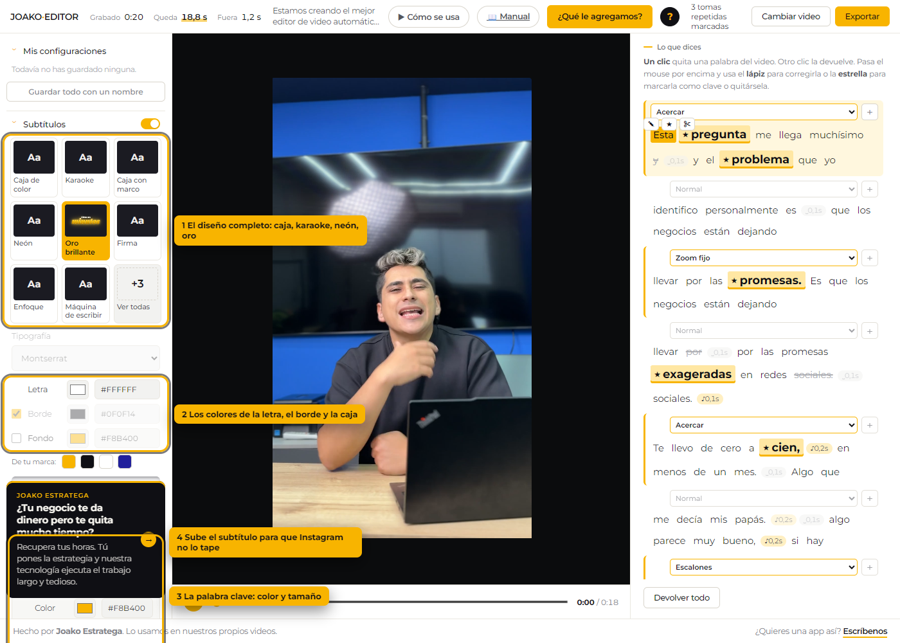
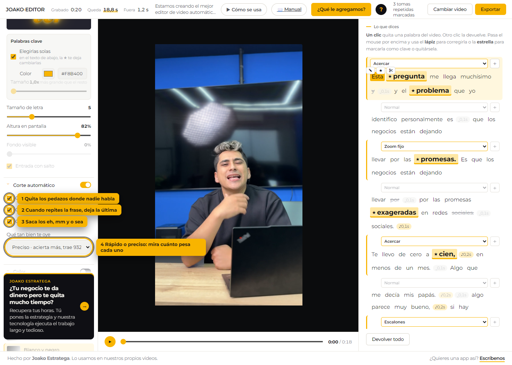
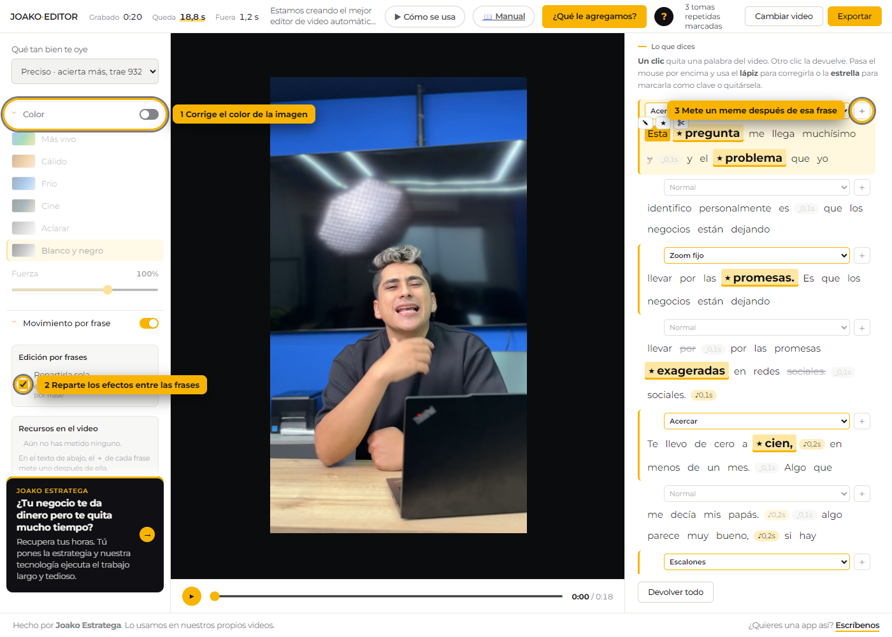
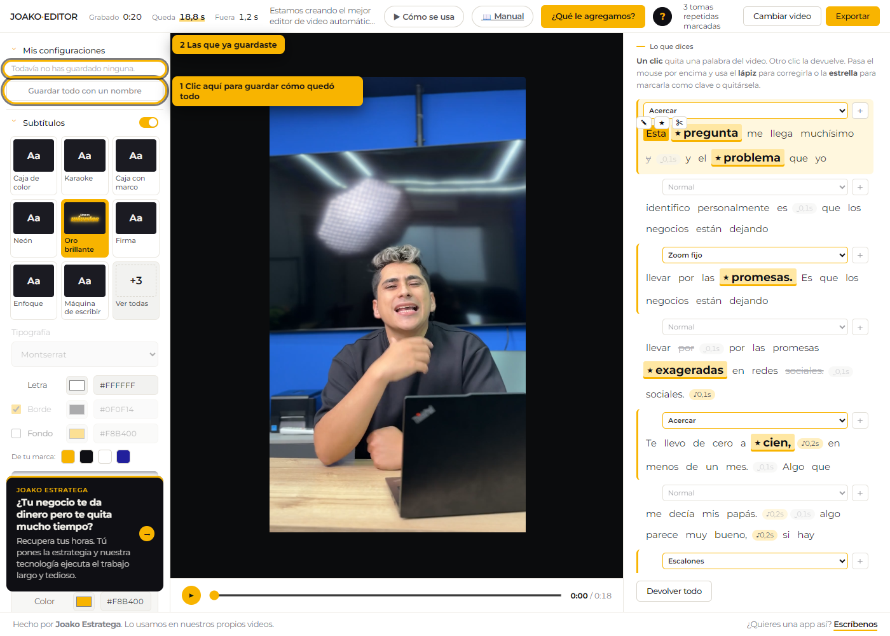
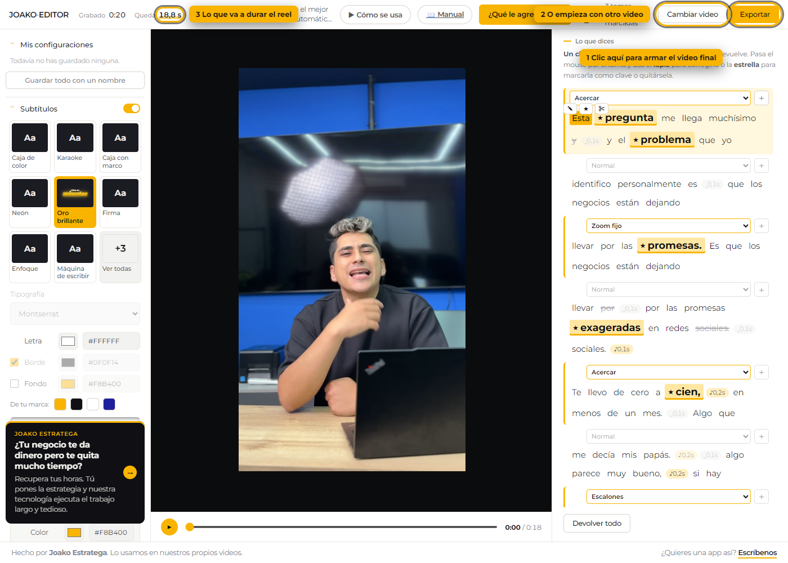

Paso por paso, con la pantalla de verdad y el botón marcado. Si vas de afán, en el editor hay un botón ? que te explica cada cosa sin salir de ahí.
La primera vez el editor te pide tus datos. Es una sola vez: la próxima vez que abras, entra directo.

La primera vez se demora un poco porque trae el reconocimiento de voz. Déjalo terminar.
Esta es la pantalla con la que te vas a encontrar siempre. Tu video no se sube a ningún lado: todo pasa dentro de tu navegador.

Cuando el editor termina de escuchar tu video, se abre la mesa. A la izquierda está el panel con todo lo que puedes cambiar; en el centro, tu video ya cortado; abajo, todo lo que dijiste.

Arriba a la derecha, "Queda" te dice cuánto va a durar el reel ya cortado.
Lo tachado es lo que el editor sacó: silencios, repeticiones y muletillas. Tú mandas: un clic saca una palabra, otro clic la devuelve.

Aquí eliges cómo se ven las letras sobre tu video. Lo que cambies se ve al instante, sin tener que exportar.

Esto es lo que hace el trabajo pesado: el editor mide el sonido y corta solo lo que sobra.

Con esto el video deja de verse plano: la cámara se mueve sola sobre tu cara y puedes meter un meme en medio.

Cuando el panel quede como te gusta, guárdalo con un nombre. La próxima vez lo pones con un clic.

Cuando esté listo, exporta. El video se arma en tu propio computador, así que trabájalo con la pestaña abierta.

Cuando termine sale el video con el botón de descargar. Sale sin marca de agua.
La lista completa, para buscar con Ctrl+F.
| Control | Qué hace | Cuándo te sirve |
|---|---|---|
| Tu nombre | Con esto te saludamos y sabemos quién nos escribe si algo falla. | — |
| Indicativo del país | Abre la lista de países y pone el código delante de tu número. | Puedes escribir el nombre del país para encontrarlo rápido. |
| Tu WhatsApp | Es por donde te respondemos si el editor te falla con un video. | — |
| Tu correo | Te avisamos por aquí cuando el editor tenga algo nuevo. | — |
| Aceptar el trato de datos | Dice que estás de acuerdo con que guardemos tus datos para responderte. | Sin esta casilla, el botón de entrar no se prende. |
| Acepto y empiezo | Te deja entrar y trae el reconocimiento de voz. | La primera vez se demora porque lo baja. Después abre de una. |
| Ver cómo se usa | Abre el video de dos minutos que muestra el editor completo. | — |
| Mandarme el link | Te manda la dirección del editor para que la abras en un computador. | — |
| Copiar el link | Copia la dirección del editor para pegarla donde quieras. | — |
| Versión Lite | Abre la versión liviana, que sí funciona en el celular. | Hace menos cosas, pero no necesita computador. |
| Cómo se usa | Abre el video que muestra el editor completo, paso por paso. | — |
| Manual | Abre el manual escrito, con la pantalla de cada paso y el botón marcado. | Se abre en otra pestaña, así no pierdes lo que llevas hecho. |
| Explicarme cada botón | Prende el modo ayuda: tocas cualquier cosa y te dice qué hace, sin activarla. | Para apagarlo, vuelve a tocarlo o aprieta la tecla Escape. |
| Lo que hacemos | Abre lo que hace Joako Estratega por los negocios que no dan abasto. | — |
| Qué le agregamos | Te abre un cuadro para contarnos qué te hizo falta. | Lo leemos todo. Varias cosas del editor salieron de ahí. |
| Control | Qué hace | Cuándo te sirve |
|---|---|---|
| Suelta aquí tu video | Arrastra el video hasta aquí, o haz clic para buscarlo en tu computador. | El video no se sube a ningún lado: todo pasa dentro de tu navegador. |
| Cambiar video | Bota el video de ahora y te deja soltar otro. | Lo que ajustaste en el panel se queda como está. |
| Grabado | Lo que dura tu video tal como lo grabaste. | — |
| Queda | Lo que va a durar el reel ya con los cortes puestos. | Es el número que importa. El editor arma reels de hasta 90 segundos. |
| Fuera | Lo que el editor quitó: silencios, repeticiones y muletillas. | — |
| Control | Qué hace | Cuándo te sirve |
|---|---|---|
| Una palabra tuya | Un clic la saca del video. Otro clic la devuelve. | La palabra tachada es la que no va a quedar. |
| Corregir la palabra | Cambia cómo se escribe esa palabra en el subtítulo. | Sirve cuando el reconocimiento entendió mal un nombre o una marca. |
| Palabra clave | Marca esa palabra como la importante de la frase, o le quita la marca. | La palabra clave sale resaltada y más grande, como en los anuncios. |
| Partir la frase | Desde esa palabra empieza una frase nueva. | Sirve cuando un subtítulo quedó muy largo para leerlo de un vistazo. |
| Unir con la de arriba | Pega esta frase con la anterior y quedan en un solo subtítulo. | — |
| Devolver todo | Vuelve a meter todas las palabras que habías sacado. | Para empezar de nuevo sin soltar el video otra vez. |
| Control | Qué hace | Cuándo te sirve |
|---|---|---|
| Subtítulos sí o no | Pone o quita los subtítulos de todo el video. | — |
| Estilos de subtítulo | Cambia el diseño completo del subtítulo: caja, karaoke, neón, oro. | Lo ves al instante sobre tu video, sin tener que exportar. |
| Tipografía | Cambia el tipo de letra del subtítulo. | — |
| Color de la letra | El color con el que se escribe el subtítulo. | — |
| Código del color | Escribe aquí el código exacto de tu marca, por ejemplo #F8B400. | — |
| Borde de la letra | Pone el contorno alrededor de la letra. | Sin borde, la letra se pierde cuando el fondo del video es claro. |
| Caja detrás del texto | Pone el rectángulo de color detrás del subtítulo. | — |
| Color del borde | El color del contorno que rodea la letra. | — |
| Código del borde | El código exacto del color del contorno, por ejemplo #0F0F14. | — |
| Color de la caja | El color del rectángulo que va detrás del texto. | — |
| Código de la caja | El código exacto del color de la caja, por ejemplo #F8B400. | — |
| Código de la palabra clave | El código exacto del color con el que se resalta la palabra clave. | — |
| Ver todos los estilos | Abre la ventana con todos los estilos de subtítulo, con su muestra. | — |
| Colores de tu marca | Le pone al color que estás editando uno de los colores guardados. | — |
| Elegirlas solas | Deja que el editor escoja la palabra más importante de cada frase. | Si no te gusta la que eligió, la cambias con la estrella en el texto de abajo. |
| Color de la palabra clave | El color con el que se pinta la palabra resaltada. | — |
| Tamaño de la palabra clave | Hace la palabra clave más grande que el resto de la frase. | Subirlo un poco es lo que le da cara de anuncio al reel. |
| Tamaño de letra | Agranda o achica todo el subtítulo. | — |
| Altura en pantalla | Sube o baja el subtítulo dentro del video. | Déjalo alto para que el nombre de la cuenta no lo tape en Instagram. |
| Fondo visible | Qué tanto se ve la caja de color detrás del texto. | — |
| Entrada con salto | Hace que el subtítulo aparezca creciendo, en vez de aparecer pegado. | — |
| Control | Qué hace | Cuándo te sirve |
|---|---|---|
| Corte automático | Prende o apaga todos los cortes de una vez. | Apagado, el video queda completo tal como lo grabaste. |
| Quitar los silencios | Mide el sonido y corta los pedazos donde nadie habla. | Es lo que más acorta el video y lo que hace que se sienta rápido. |
| Quitar tomas repetidas | Cuando te equivocas y vuelves a empezar la frase, deja solo la última. | — |
| Quitar muletillas | Saca los eh, mm y o sea del video y del subtítulo. | — |
| Qué tan bien te oye | Elige el reconocimiento de voz: el rápido o el preciso. | El rápido trae 286 MB y se le escapan palabras. El preciso acierta más, pero trae 932 MB la primera vez. |
| Control | Qué hace | Cuándo te sirve |
|---|---|---|
| Color | Corrige el color de la imagen con un estilo ya hecho. | Sirve cuando grabaste con luz amarilla o la imagen salió apagada. |
| Estilos de color | Elige el tono de la imagen: más cálido, más frío, más contrastado. | — |
| Fuerza del color | Qué tan fuerte se aplica el estilo de color. | — |
| Movimiento de cámara | Hace que la cámara se acerque y se aleje sola mientras hablas. | El editor encuentra tu cara y cierra sobre ella. Es lo que hace que el reel se sienta vivo. |
| Repartirla sola | Reparte los acercamientos y el blanco y negro entre las frases, sin que tú elijas. | Si prefieres decidir frase por frase, apágalo y usa la lista de cada frase abajo. |
| Qué tan cerca | Qué tanto se acerca la cámara cuando cierra sobre ti. | — |
| Efecto de esta frase | Elige qué le pasa al video mientras se dice esa frase. | Acercar, alejar o blanco y negro. Cambiarlo entre frases es lo que evita que se vea plano. |
| Meter un recurso | Mete un meme, un b-roll o una tarjeta justo después de esa frase. | — |
| Recursos metidos | La lista de memes, tarjetas y videos que metiste en medio. | — |
| Quitar este recurso | Saca ese meme o ese video de la lista. | — |
| Quitar este recurso | Saca ese recurso del video. | — |
| Recurso listo | Mete ese meme o esa tarjeta en el punto que elegiste. | Pasa el mouse por encima para verlo moverse antes de meterlo. |
| Sube el tuyo | Mete un meme o un video corto tuyo, en vez de uno de la lista. | — |
| Control | Qué hace | Cuándo te sirve |
|---|---|---|
| Velocidad | Acelera todo el video sin que la voz suene rara. | Un 1.1x se nota poco y le quita segundos al reel. |
| Emparejar el volumen | Sube la voz al nivel que usan las redes y deja todo parejo. | — |
| Control | Qué hace | Cuándo te sirve |
|---|---|---|
| Guardar todo con un nombre | Guarda cómo quedó el panel completo, con el nombre que le pongas. | Así tienes una configuración por marca o por cliente, y cambias con un clic. |
| Mis configuraciones | Las configuraciones que ya guardaste. Un clic la vuelve a poner. | — |
| Nombre de la configuración | Cómo se va a llamar. Por ejemplo, el nombre de tu marca. | — |
| Control | Qué hace | Cuándo te sirve |
|---|---|---|
| Reproducir | Toca el video con todo lo que llevas puesto. | Es la vista previa: lo que ves aquí es lo que va a salir. |
| Barra de tiempo | Te lleva a cualquier momento del video. | — |
| Exportar | Arma el video final con los cortes, los subtítulos y los efectos. | Se demora unos minutos y trabaja tu computador. No cierres la pestaña. |
| Descargar el video | Guarda el reel terminado en tu computador, sin marca de agua. | — |
| Seguir ajustando | Te devuelve a la mesa con todo como lo dejaste. | — |
| Editar otro | Empieza con un video nuevo y te deja el mismo estilo puesto. | — |